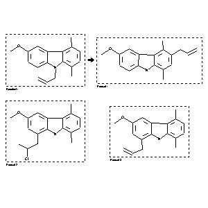

|  |
| FA | RX(1); FLST(1); RX(3) |
Reaction (1 of 1)
| Reaction ID | 2848746 |
| Reactant BRN | 5055710 |
| Reactant | 9-allyl-6-methoxy-1,4-dimethylcarbazole |
| Product BRN | 5060575; 5061191; 5067154 |
| Product | 1-allyl-3-methoxy-5,8-dimethylcarbazole; 3-allyl-6-methoxy-1,4-dimethyl-9H-carbazole; 1-(2-chloropropyl)-3-methoxy-5,8-dimethylcarbazole |
| No. of Reaction Details | 3 |
Reaction Details (1 of 1)
| Reaction Classification | Preparation |
| Yield | 7 percent (BRN=5067154); 62 percent (BRN=5060575); 24 percent (BRN=5061191) |
| Reagent | AlCl3 |
| Solvent | CH2Cl2 |
| Temperature | -30 - 20 |
| Citation Pointer | 5606540; Journal; Sainsbury, Malcolm; Smith, Andrew D.; Vong, Kuok K.; Scopes, David I. C.; JCPRB4; J.Chem.Soc.Perkin Trans.1; EN; 1988; 2945-2954; |
Reaction Details (2 of 1)
| Reaction Classification | Preparation |
| Yield | 24 percent (BRN=5061191); 62 percent (BRN=5060575); 7 percent (BRN=5067154) |
| Reagent | AlCl3 |
| Solvent | CH2Cl2 |
| Temperature | -30 - 20 |
| Citation Pointer | 5606540; Journal; Sainsbury, Malcolm; Smith, Andrew D.; Vong, Kuok K.; Scopes, David I. C.; JCPRB4; J.Chem.Soc.Perkin Trans.1; EN; 1988; 2945-2954; |
Reaction Details (3 of 1)
| Reaction Classification | Preparation |
| Yield | 62 percent (BRN=5060575); 24 percent (BRN=5061191); 7 percent (BRN=5067154) |
| Reagent | AlCl3 |
| Solvent | CH2Cl2 |
| Temperature | -30 - 20 |
| Citation Pointer | 5606540; Journal; Sainsbury, Malcolm; Smith, Andrew D.; Vong, Kuok K.; Scopes, David I. C.; JCPRB4; J.Chem.Soc.Perkin Trans.1; EN; 1988; 2945-2954; |
Reference (1 of 1)
| Citation Number | 5606540 |
| Document Type | Journal |
| Authors | Sainsbury, Malcolm; Smith, Andrew D.; Vong, Kuok K.; Scopes, David I. C. |
| CODEN | JCPRB4 |
| Journal Title | J.Chem.Soc.Perkin Trans.1 |
| Language Code | EN |
| Publication Year | 1988 |
| Page | 2945-2954 |